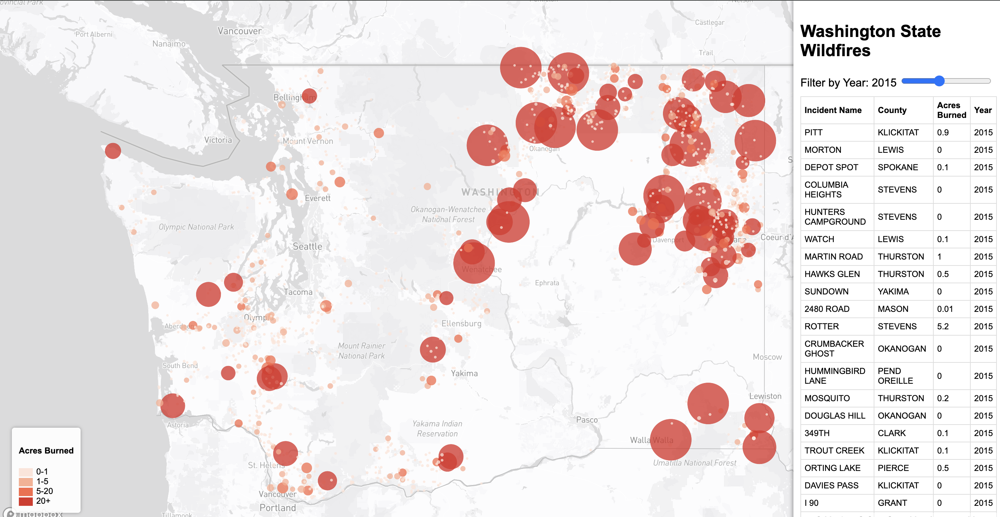

An interactive web map visualizing wildfire incidents across Washington State from 2008 to 2025, with year filtering, color-coded fire sizes, and a linked incident table.
AI Disclosure
AI was used to assist in debugging code for this project.

This interactive web map displays wildfire incidents across Washington State from 2008 to 2025. Users can explore individual fire locations, view incident details, and filter fires by year using a dynamic slider that updates both the map and a linked data table simultaneously.
The map focuses on all counties and wildfire-prone regions of Washington State, providing both spatial and tabular insights into how wildfire patterns have shifted across nearly two decades.
/assets/firedata.geojson
IncidentName — name of the wildfireCounty — county where the fire occurredAcresBurned — total acres burnedYear — year of the incidentThe map covers Washington State, USA — all counties and wildfire-prone regions statewide. By focusing on a single state over 17 years, the visualization surfaces both the geographic clustering of fires (concentrated in eastern Washington) and temporal trends in fire frequency and severity.